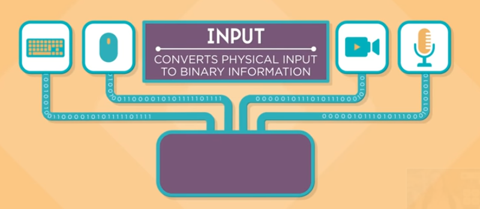
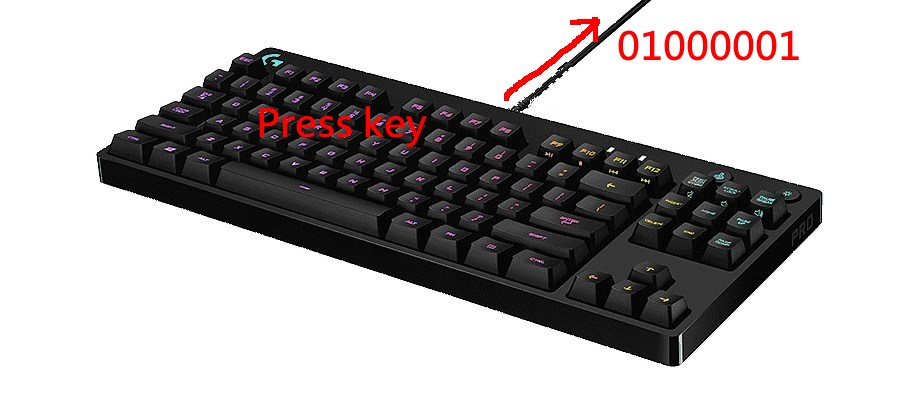
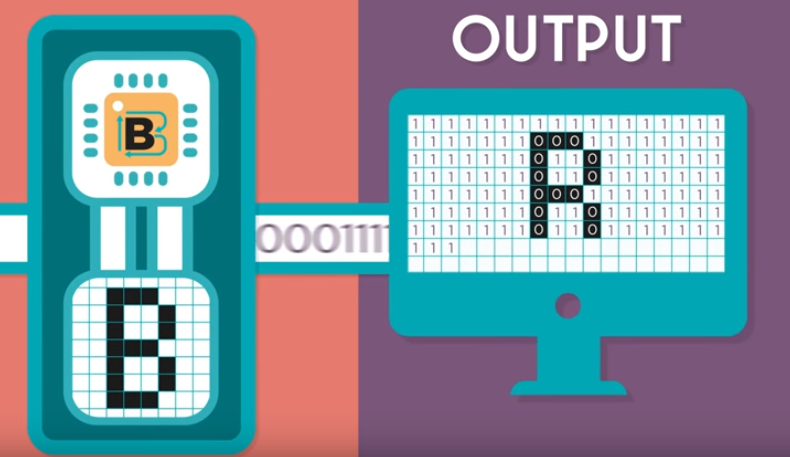
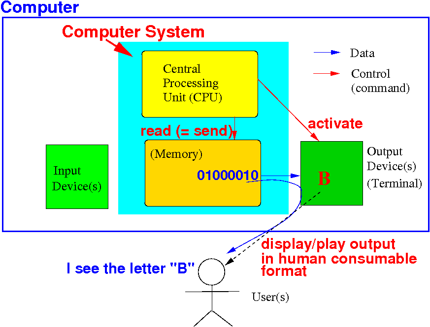

Function of input devices
Background information:
- Humans and
computers
use
different ways
to represent
(the same) information !!
Example:
How humans represent the number TWO: 2
How computers represent the number TWO: 10
(Computers use binary numbers !!!)
|
-
Input devices will
always send
binary (= computer-friendly) data
to the computer as
input data !!
|
The function of input devices
The function of
input devices:
- Input devices
enable human users
to
enter data
into the computer (= machine)
in a human-friendly way
- Input devices will
"translate"/convert the
human inputs into
binary numbers so
the computer can
store the
input data
|
Examples of operations of input devices
This diagram shows you the
operation of
4 kinds of
input devices:

- A
keyboard will
translate
the key press into
a binary number that
represents the
character on the
key
- A
mouse will
send
the
coordinates of the
current mouse position
- A
camera will
send
RGB signal values
- A
microphone will
send a
digitized audio signal
|
Function of input devices - the keyboard
This diagram shows
the
"translation" process
performed
by the
keyboard
input device:

- When the
user presses the
"A" key on the
key board, the
key board will
send 01000001 to
the computer system ---
01000001 is
the representation
of the letter "A"
|
Note:
we will learn
how to
represent
letters in an alphabet
later in the course.
Function of output devices
Recall:
- Humans and
computers
use different ways
to represent (the same)
information !!
|
The function of
output devices:
- Output devices
enables
the computer to
show the
data stored inside the computer
to a
human user
in a
"human-friendly" way
|
Function of output devices -
illustrated
Background information:
- The letter 'B' is
represented inside
the computer by
the
binary number 01000010
|
This diagram shows
how a
terminal
output device
displays a
picture when
01000010 is
"printed" to the
terminal:

Pixels on the
terminal display can be
turned on (= 1) or
turned off (= 0) to
show the
picture
B
Function of output devices - a bigger
picture on the
terminal
This diagram shows you
how the
computer shows
the letter B (information)
to a human user:

- Computer system sends
01000010 (electrical pulses)
to the
terminal
- The terminal's graphic system
lights up a
rectangular area showing the
picture
B
- Human user
recognizes the
letter B !!!
|
❮
❯